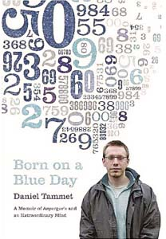

| 一个记忆奇才的故事 |
他的世界里数字是七彩的 ——一个记忆奇才的故事
27岁的英国男子丹尼尔·塔曼特堪称天才，他拥有惊人的“记忆数字”能力，能将圆周率背诵到小数点后面第22514位。他不仅精通多种语言，还创立了一家记忆技巧公司，专门教人如何更快更有效地学习数学和语言。 http://photo9.hexun.com/p/2007/1002/133544/b_CABA95A73F4F5913946F2DFE4DD938B7.jpg
然而孤独症却让他自小无法与人正常交流，也无法理解常人的感情。他的世界里只有数字，而且每个数字都拥有特定的颜色和情感，例如4代表害羞和安静，6代表黑暗空虚，9则是蓝色的。在描述一种感觉的时候，他就会想到相应的数字。
丹尼尔的世界极其华美也非常奇特，在那里从1到1万的每个数字都有着特有的颜色、纹理和情感共鸣的地方。“1这个数字非常闪耀，是一种明亮的白色，就像有人拿着一个火把在我眼前晃来晃去……4则是害羞和安静的，就像我一样。89则像是正在飘落的雪。”
还有很多奇特的画面，丹尼尔都一一描述在他的自传《诞生于忧郁日子》之中。背圆周率创欧洲纪录
“学者综合征”是一种非常罕见的孤独症，是在整体认知功能受损的情境下，呈现狭小、孤立，且对比强烈的天赋。这种智能低下却又天赋异禀的人，最早被称为“白痴学者”或“白痴天才”。因“白痴”一词相当负面，近几年对这种特才现象改为中性的“学者综合征”。
目前世界上约有50人患有这种病，但是只有丹尼尔可以向外界描述他的思想的活动。孤独症研究专家达罗尔德·特雷福特说：“这是头一次有人对低能天才的能力进行解释，这是非常罕见的，实际上也从来没有过。”
丹尼尔的情况给他带来了巨大的财富：他将数字的形象化，让他可以拥有卓越的数学才能。他能够将圆周率背到了小数点后第22514位，创造了欧洲人的一个纪录。
不知如何跟人交往
但是这同样给他带来了极大的困扰。第一个难题就是不知道怎样和别人打交道，“在我八九岁之前，我都无法意识到其他孩子是拥有想法和感觉的人。”超级市场也是这样，“因为那里的色彩太鲜艳，让我变糊涂了。”
丹尼尔的一些轻微的动作都让人感觉到他与常人不同。他的步伐轻微得有点摇摇欲坠，而且常常会非常敏感地注视着别人。他解释说：“我必须自己学会注视别人的眼睛，进行视线交流。在以前，我经常会盯着别人的嘴，因为这是脸的一部分而且在不停地动。”当摄影师想给他拍照的时候，丹尼尔就表现得很别扭，好像自己是站在行刑队的面前。
来源：新华网（肖显）